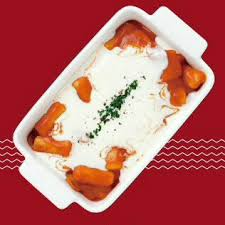

네이버가기
돌아가기
죠스 떡볶이 메뉴
매운떡볶이 3000
치즈떡볶이 4500
찰순대 3500
수제튀김 3500
새우 튀김 변경시 +300
부산어묵 2500
유부주머니 3000
새우튀김우동 4500
어묵고로케 3500
작성자의 추천 메뉴

죠스 떡볶이의 신메뉴인 로제크림 떡볶이
매운떡볶이보다 덜 맵고 크림소스덕분에 더 맛있다!!
작성자 주석
- 새우튀김이 맛있으니 300원추가해서 새우튀김으로 변경해서 먹자
[선호도] 작성자가 좋아하는 음식
| 분식류 |
한식류 |
양식류 |
중식류 |
치킨류 |
| 떡볶이 |
청국장 |
리조또 |
짬뽕 |
양념 |
| 순대 |
고등어 |
펜네 |
짜장면 |
치하오 |
| 튀김 |
미역국 |
스파게티 |
탕수육 |
마라칸 |
| 피카츄 |
임연수 |
스프 |
깐풍기 |
맛초킹 |
| 오뎅 |
해장국 |
샐러드 |
잡채밥 |
뿌링클 |
죠스 떡볶이 시키는 방법
- 배달의 민족 어플을 켠다
- 죠스 떡볶이를 검색한다
- 먹고 싶은 메뉴를 장바구니에 넣는다
- 결제방법을 선택하고 주문버튼을 누른다
- 배달 온 음식을 맛있게 먹는다
| up |
right |
| left |
center |
| down |
과제 끝!
맛있는 저녁드세용~